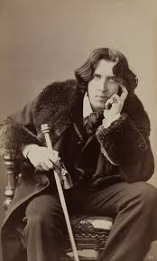

დორიან გრეის პორტრეტი
ინფორმაცია წიგნზე
ავტორი:ოსკარ უაილდი
ჟანრი: გოთური, ფილოსოფიური
გამოშვების თარიღი: 1890 წელი
აღწერა:
ოსკარ უაილდის ერთადერთი რომანი არის ახალგაზრდა კაცის საოცნებო ისტორია, რომელიც ყიდის თავის სულს მარადიული ახალგაზრდობისა და სილამაზისთვის.
ამ სახელგანთქმულ ნაშრომში უაილდმა შეადგინა ბოროტებისა და გარყვნილების ზემოქმედების დამღუპველი პორტრეტი ახალგაზრდა ესთეტზე მე-19 საუკუნის ბოლოს ინგლისში. გოთური საშინელებათა რომანისა და დეკადენტური ფრანგული მხატვრული ლიტერატურის ელემენტების შერწყმა, წიგნი ყურადღებას ამახვილებს თვალსაჩინო წინაპირობაზე: როდესაც დორიან გრეი იძირება დანაშაულებრივ და უხეში სენსუალურ ცხოვრებაში, მისი სხეული ინარჩუნებს სრულყოფილ ახალგაზრდობას და ენერგიულობას, ხოლო მისი ახლახან დახატული პორტრეტი დღითი დღე იზრდება. ბოროტების ამაზრზენი ჩანაწერი, რომელიც მან უნდა დაიმალოს სამყაროსგან. საუკუნეზე მეტი ხნის განმავლობაში, ეს მომხიბლავი ზღაპარი საშინელებათა და სუსპენსის შესახებ ფართო პოპულარობით სარგებლობდა. ის არის უაილდის ერთ-ერთი ყველაზე მნიშვნელოვანი ქმნილება და კლასიკურ მიღწევებს შორის.
ავტორი: ოსკარ ფინგალი ო'ფლაჰერტი უილს უაილდი იყო ირლანდიელი დრამატურგი, პოეტი და მრავალი მოთხრობისა და ერთი რომანის ავტორი. ცნობილი თავისი მახვილგონივრული ჭკუით და უამრავი აფორიზმით, ის გახდა გვიანი ვიქტორიანული ეპოქის ერთ-ერთი ყველაზე წარმატებული დრამატურგი ლონდონში და მისი დროის ერთ-ერთი უდიდესი ცნობილი ადამიანი. მისი რამდენიმე სპექტაკლი კვლავაც ფართოდ სრულდება, განსაკუთრებით „სერიოზული ყოფნის მნიშვნელობა“.
ფართოდ გაშუქებული სასამართლო პროცესების სერიის შედეგად, უაილდმა განიცადა დრამატული ვარდნა და დააპატიმრეს ორი წლით მძიმე შრომით, მას შემდეგ რაც გაასამართლეს სხვა მამაკაცებთან ერთად "უხეში უხამსობისთვის". მას შემდეგ, რაც უაილდი ციხიდან გაათავისუფლეს, ღამის ბორნით გავიდა დიეპში. ის არასოდეს დაბრუნებულა ირლანდიაში ან ბრიტანეთში და გარდაიცვალა სიღარიბეში.
ავტორის ხელმოწერა: